Opening a glass door0009
A person moves through a glass door as it swings open.
IEEE VCIP 2026


School of Communication and Information Engineering, Shanghai University * Corresponding author
Scene 0042 · 150 standardized frames per camera · 59.94 fps. The array and center videos use the same frame sequence.
See the same movement across the 5×5 camera array. Switch to the center camera for a closer view, then explore how foreground and background shift between viewpoints.
Original-speed video preserves the recorded motion. Explore parallax first, then examine the temporal detail below.
Choose a scene, then change cameras while holding time fixed. Compare foreground displacement, occlusion and reflections.
A person passing close to the camera array.
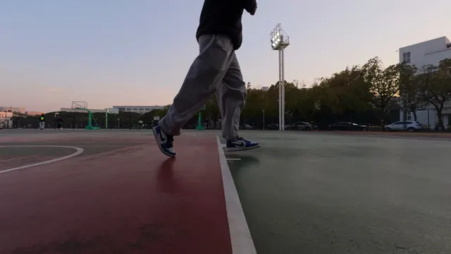
Select a position in the array. Arrow keys move between cameras.
Rows A–E, columns 1–5. C3 is the center view (v12). Every image shows the same frame index.
The 5×5 video combines all 25 standardized JPEG sequences from scene 0042, in row-major order A1–E5. Each camera contributes frames 1–150 at 60000/1001 fps. The center video uses the same C3 sequence. Web exports only resize and encode these processed frames.
Viewpoint comparisons hold the frame index fixed at 91. Lightweight images appear inline; select an image to load its larger version.
30 consecutive recorded frames, 76–105, at 59.94 fps (nominal 60 fps). A fixed crop highlights foot motion; neighboring frames are 16.68 ms apart.
Scene 0042, camera C3. Drag or step through the original frame indices. Each group contains three consecutive frames.
A person moves through a glass door as it swings open.
A person moves behind a foreground mesh fence.
RealDynLFV contains 45 dynamic sequences: 29 outdoor, 15 indoor and one mixed scene. The standardized sequences contain 9,031 temporal frames, each with 25 views.
Large angular displacement, occlusion and view-dependent appearance make sparse-view reconstruction challenging. The benchmark also captures geometric and photometric variation encountered with consumer cameras.
Sequence-level split with scene-disjoint testing.
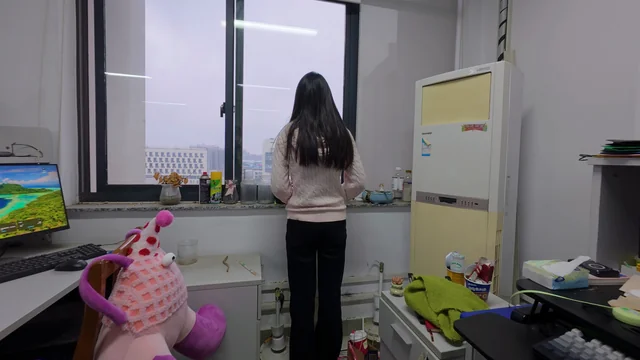
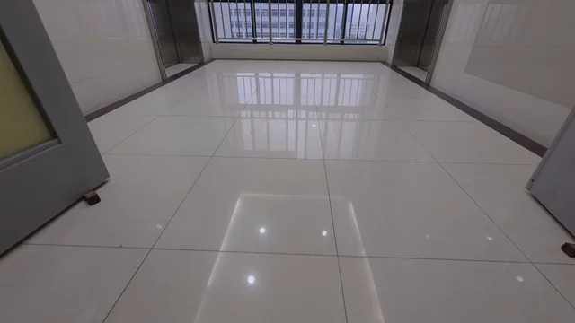
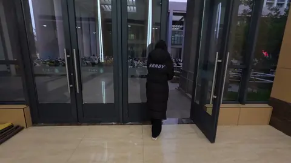
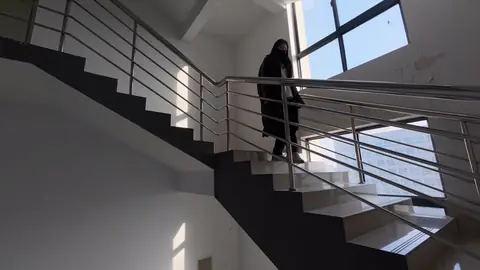
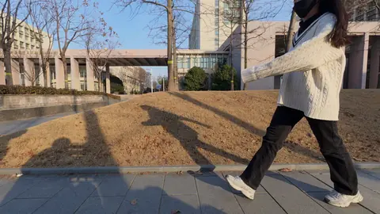
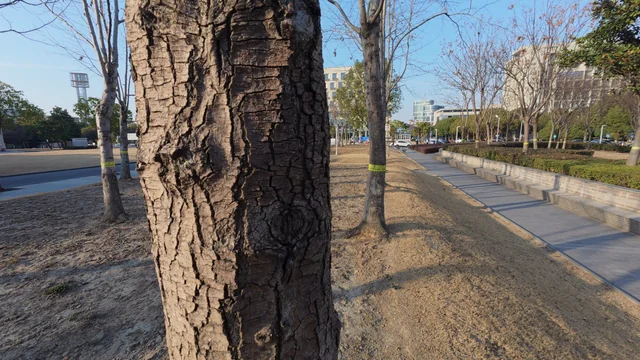
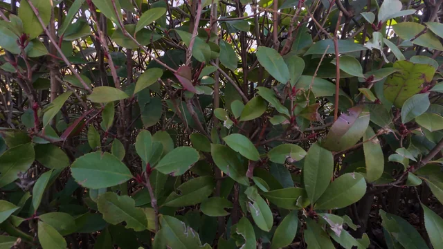
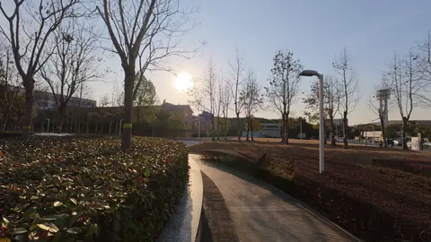
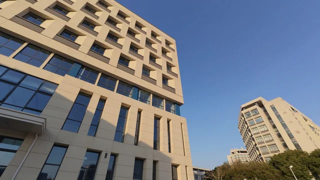
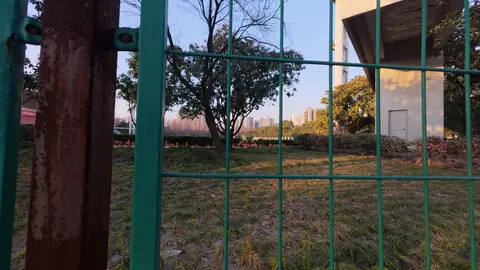
15 center-view examples from the dataset. Select an image to enlarge it.
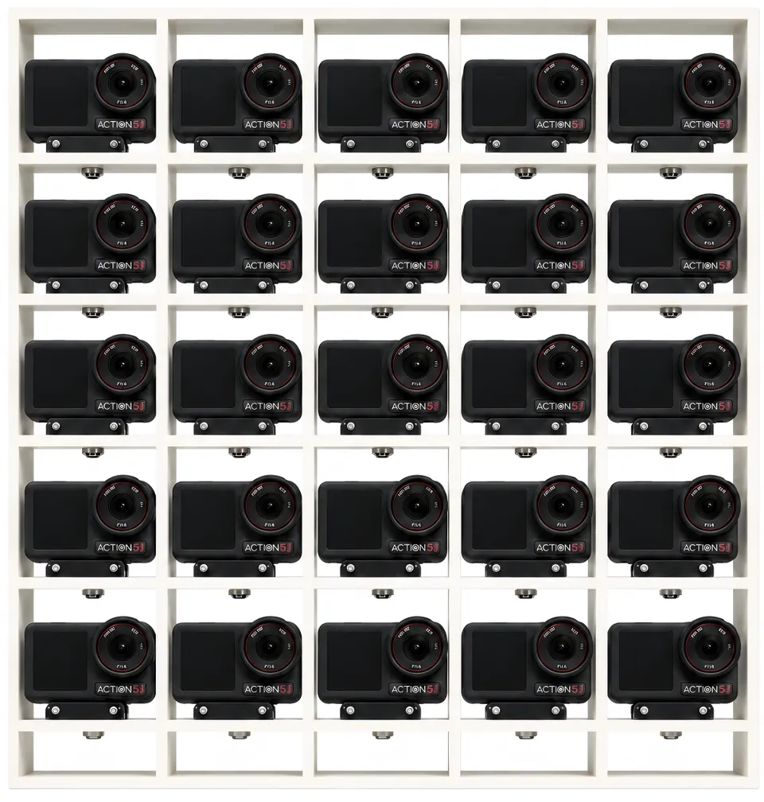
25 action cameras, with nominal 80 mm spacing, capture source video at 4K/60 fps. This photograph shows the acquisition array used for RealDynLFV.
25 action cameras, 80 mm nominal spacing; source recordings at 4K/60 fps.
Use the center camera's clapperboard sound as reference, estimate each camera's offset by cross-correlation, and trim to a common start at the nearest frame.
Calibration-based rectification, shared 16:9 crop, 1080p resize and a fixed D-Log M to Rec.709 LUT.
8-bit JPEG sequences with consistent view indices and frame names.
The paper evaluates an existing sparse-view LFV coding framework on RealDynLFV, using the fixed 32/5/8 split. Four encoded corner views are used to reconstruct all 25 views. This provides a practical evaluation setting for studying LFV reconstruction and compression.
Coding framework: Li et al., TCSVTThis page provides an interactive sample from RealDynLFV. The full dataset is planned for public release after acceptance of the journal extension.
@inproceedings{han2026realdynlfv,
title = {RealDynLFV: A Large-Parallax Benchmark for
Real-World Dynamic Light Field Video},
author = {Han, Zhehao and Zheng, Yinfeng and Mao, Yifan
and Wu, Xianliang and Huang, Xinpeng
and Yang, Chao and An, Ping},
booktitle = {IEEE Visual Communications and Image Processing (VCIP)},
year = {2026},
note = {Accepted},
url = {https://xinpeng24huang.github.io/RealdynLFV-Homepage/}
}